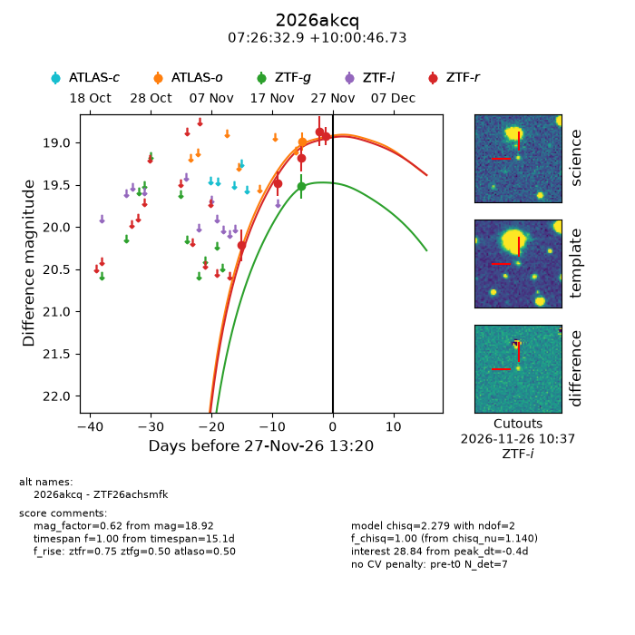
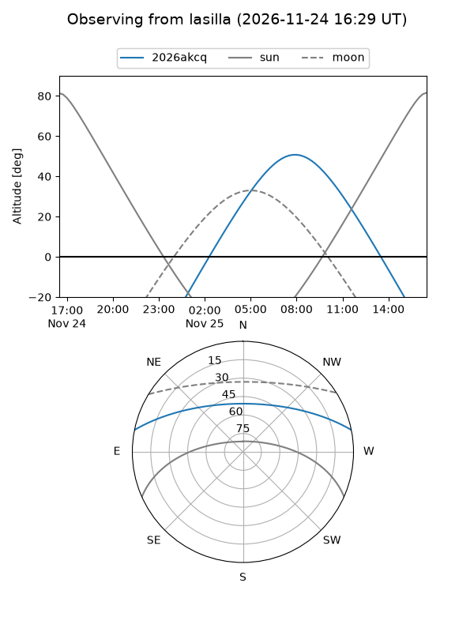
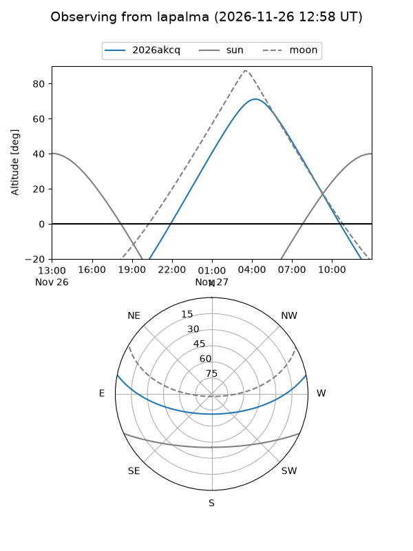
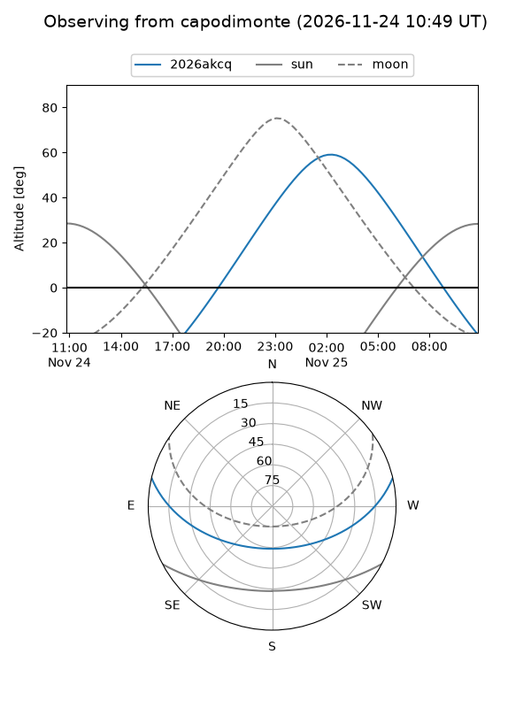
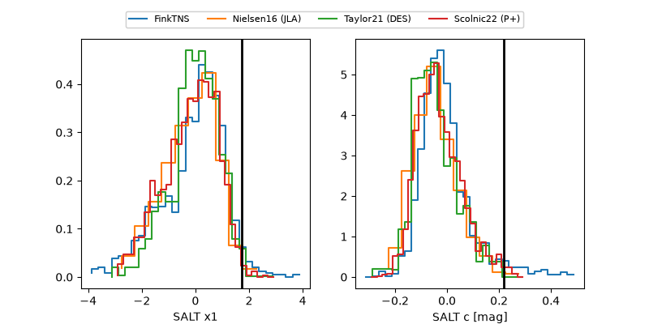

2026akcq
Target 2026akcq at 2026-11-27 13:21
Aliases and brokers:
FINK-ZTF: ztf.fink-portal.org/ZTF26achsmfk
Lasair-ZTF: lasair-ztf.lsst.ac.uk/objects/ZTF26achsmfk
ALeRCE-ZTF: alerce.online/object/ZTF26achsmfk
YSE-PZ: ziggy.ucolick.org/yse/transient_detail/2026akcq
TNS name: wis-tns.org/object/2026akcq
Direct TNS query: direct search
alt names
ZTF26achsmfk (ztf,fink_ztf)
2026akcq (tns,yse)
Coordinates:
equatorial (ra, dec) = 111.6371,+10.01298
equatorial (HMS+DMS) = 07:26:32.90,+10:00:46.73
galactic (l, b) = (207.8692,+12.29971)
Flags:
peak dt: -0.4
Photometry:
last atlaso=18.99, ztfg=19.52, ztfr=18.92
1 atlaso, 1 ztfg, 5 ztfr detections
Lightcurve

Visibility



Additional plots
